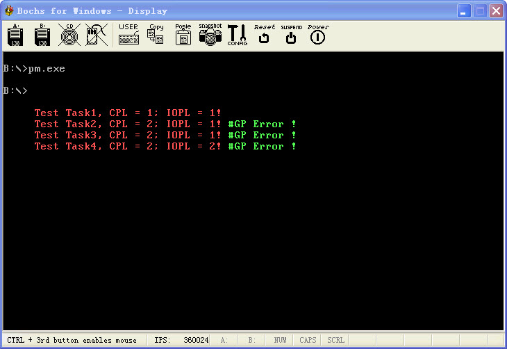

保护模式10:输入输出保护敏感指令
文章目录
为了支持多任务, X86体系不但需要实现任务的隔离与共享, 前面几篇我们已经有了一些体验, 但是仅仅任务隔离与保护还是不够的, 还需要对输入/输出进行保护, 这样一个没有权限的程序就不能随便的去访问一些端口,也不能够随便的执行一些指令. 本篇我们就来具体看看实现细节!
X86除了上一篇介绍的特权指令外, 还有这个敏感指令, 特权指令的话, 只能在特权模式下执行, 也就是0环, 其他环执行就异常. 敏感指令的话, 需要查看IOPL.
X86将一系列的指令归类为IO敏感指令, 这些指令想要得到执行, 必须在CPL <= IOPL的情况下. 在其他情况下, 则产生通用保护异常(#GP), 敏感指令有这么几条, CLI, STI, IN, INS, OUT, OUTS…除了CLI, STI以外这几条指令, 除了CPL <= IOPL不满足产生异常, IN, INS, OUT, OUTS, 在CPL > IOPL的情况下, 如果IO许可位图是允许的也是可以访问的.
这里又搞出一个 I/O许可位图, I/O许可位图处于当前TSS中. 所以可以每个任务有自己特别的I/O许可位图.这样可以有效的区分不同的任务实现高精度的控制, 不过好像Windows也没有利用这个特性, 据说是太慢了??
I/O许可位图由二进制串组成, 每一位对应一个IO地址, 从0开始计数. 和中断号一样. 如果位串的该位为0, 那么在CPL <= IOPL的情况下也允许执行, 否则#(GP). I/O许可位图有很多, 因为X86支持的I/O地址空间为64K, 最长可以到64K,所以I/O许可位图最长为8K(64K/8),但是一般任务根本用不了这么多的位图. 所以一般这样分配, 从TSS的104字节开始, 列出自己想填写的I/O许可位图, 对于不想列出的后面部分以0FF结束就可以了.
还有有可能在读取I/O许可位图的时候, 读取的位图位4位, 比如INSD, 一下操作4个地址空间, 需要4个位图, 那么很有可能在读取低位的在一个字节, 读取高位的时候又在一个字节. 所以X86为了避免这种情况, 每次读取I/O许可位图的时候是2个字节2个字节读取的, 这样. 不管多坏的情况也不可能超过2个字节. 这样在结尾加个0ffh也就比较好理解了, 如果不加那就越界了. 加其他的值也不好区分, 只有每个位加1才不会曲解原来的I/O许可位图.
除了上面说的, 还有就是对IOPL, Eflags中的标记位进行保护了, 如果这些标记位允许随意更改, 那么上面谈的就形同虚设了,所以只有特权级为0的程序才能够修改IOPL和VM位, 相对于IOPL更内层的特权级才能够修改IF位. 如果特权级不符合要求, 修改这些位的话, 也不会异常, CPU会忽略. OK差不多就是这么多东西了!
老套路,说完这个基本的概念, 就该说说这个演示代码的逻辑了. 这个演示代码的话,和以前都是一样首先初始化进入保护模式应该初始化的东西, 然后进入保护模式过渡段, 然后在保护模式的过渡段中跳到Demo段中,在这里装载了自己的TR和初始化了TSS中的LDTR, 初始化了演示代码段的 SS:ESP, CS:EIP. LDTR. DS, 等等.然后通过任务门切换到_TestCodeBegin中, 第一次切换的代码, 很显然在CPL == IOPL的情况下, 写一系列端口是没有问题的,所以不会异常, 第二次则因为违反了I/O许可位图规定而产生异常. (#GP), 第3次CPL >= IOPL, 可是使用了CLI, 还是要异常的, 第4次, CPL == IOPL 但是执行0环才可以执行的指令还是要产生异常!
试验完了. 就跳回过渡段, 然后回到实模式下. 整个世界清静了.. 还是和以前一样, 有图有真相!
http://www.joenchen.com/JoenTools/IOPL.rar

;============================================================================ ;演示保护模式下的IO保护 ;编译选项请参见 makefile TAB = 8 ;============================================================================ .686p Include pm.inc option casemap:none Stack_Len equ 1024 ;堆栈大小 ;============================================================================ GdtSeg Segment use16 ;全局描述符表 ; ;段基址 ;段界限 ;属性 Dummy: Descriptor 0, 0, 0 ;空的描述符 Normal: Descriptor 0, 0ffffh, DA_DRW ;规范段描述符 g_DataDesc: Descriptor 0, 0fffffh, DA_DRWG or DA_DPL3 ;全局4G数据段 g_IdtCode32Desc: Descriptor 0, IdtCodeSegLen-1, DA_CR or DA_32 or DA_DPL1 ;中断处理函数描述符 g_CodeTempDesc: Descriptor 0, 0ffffh, DA_C ;非一致代码段16位 g_CodeSwitchDesc: Descriptor 0, DemoCodeSegLen-1, DA_C or DA_32 ;数据段 g_VideoDesc: Descriptor 0b8000h,0ffffh, DA_DRW or DA_DPL3 ;显存段(可读写) g_DemoTssDesc: Descriptor 0, DemoTssSegLen-1, DA_386TSS ;演示任务TSS段描述符 g_TestTssDesc: Descriptor 0, TestTssSegLen-1, DA_386TSS ;测试任务TSS段描述符 g_DemoLdtDesc: Descriptor 0, LdtDemoSegLen-1, DA_LDT ;演示任务的LDT描述符 g_TestLdtDesc: Descriptor 0, LdtTestSegLen -1, DA_LDT ;测试代码段的LDT描述符 ;—————————————————————————- ;任务门 段选择子 入口 参数个数 属性 g_TestTask: Gate g_TestTssSelector, 0, 0, DA_TaskGate ;386任务门指向任务描述符 g_DemoTask: Gate g_DemoTssSelector, 0, 0, DA_TaskGate or DA_DPL2 ;386任务门指向任务描述符 GDTLen equ $ - GdtSeg ;GDT长度 ;—————————————————————————- GDT_Ptr word GDTLen-1 ;VGDT dword 0 _IDT_Ptr fword 0 ;VIDT _RegSp word ? ;用于保存SS:SP _RegSs word ? ;—————————————————————————- NormalSelector equ Normal - GdtSeg ;规范段选择子 g_DataSelector equ g_DataDesc - GdtSeg or SA_RPL3 ;全局数据段 g_CodeTempSelector equ g_CodeTempDesc - GdtSeg ;临时代码段选择子 g_DemoCodeSelector equ g_CodeSwitchDesc - GdtSeg ;任务切换代码段 g_VideoSelector equ g_VideoDesc - GdtSeg ;LDT视频段选择子 g_DemoTssSelector equ g_DemoTssDesc - GdtSeg ;TSS演示段描述符选择子 g_DemoLdtSelector equ g_DemoLdtDesc - GdtSeg ;演示代码段LDT描述符 g_TestTssSelector equ g_TestTssDesc - GdtSeg ;TSS测试段描述符选择子 g_TestLdtSelector equ g_TestLdtDesc - GdtSeg ;测试代码段的LDT g_TestTaskSelector equ g_TestTask - GdtSeg ;测试代码任务门 g_DemoTaskSelector equ g_DemoTask - GdtSeg or SA_RPL2 ;演示任务任务门 g_IdtCodeSelector equ g_IdtCode32Desc - GdtSeg or SA_RPL1 ;中断处理代码 GdtSeg Ends ;============================================================================ LdtTestSeg Segment use32 ;测试任务段的LDT ; ;段基址 ;段界限 ;属性 L_TestStack1Desc: Descriptor 0, Stack_Len-1, DA_DRW or DA_DPL1 or DA_32 ;1环堆栈段 L_TestStack2Desc: Descriptor 0, Stack_Len-1, DA_DRW or DA_DPL2 or DA_32 ;1环堆栈段 L_TestStack3Desc: Descriptor 0, Stack_Len-1, DA_DRW or DA_DPL3 or DA_32 ;1环堆栈段 L_TestCode1Desc: Descriptor 0,TestCodeSegLen-1, DA_C or DA_32 or DA_DPL1 ;32位测试代码段 L_TestCode2Desc: Descriptor 0,TestCodeSegLen-1, DA_C or DA_32 or DA_DPL2 ;32位测试代码段 L_TestCode3Desc: Descriptor 0,TestCodeSegLen-1, DA_C or DA_32 or DA_DPL3 ;32位测试代码段 ;—————————————————————————- L_TestCode1Selector equ L_TestCode1Desc - LdtTestSeg + SA_RPL1 + SA_TIL ;32位测试代码段选择子 L_TestCode2Selector equ L_TestCode2Desc - LdtTestSeg + SA_RPL2 + SA_TIL ;32位测试代码段选择子 L_TestCode3Selector equ L_TestCode3Desc - LdtTestSeg + SA_RPL3 + SA_TIL ;32位测试代码段选择子 L_TestStack1Selector equ L_TestStack1Desc - LdtTestSeg + SA_RPL1 + SA_TIL ;测试任务段的1环选择子 L_TestStack2Selector equ L_TestStack2Desc - LdtTestSeg + SA_RPL2 + SA_TIL ;测试任务段的1环选择子 L_TestStack3Selector equ L_TestStack3Desc - LdtTestSeg + SA_RPL3 + SA_TIL ;测试任务段的1环选择子 LdtTestSegLen equ $ - LdtTestSeg LdtTestSeg Ends ;============================================================================ LdtDemoSeg Segment use32 ;演示代码段LDT ; ;段基址 ;段界限 ;属性 L_DemoCodeDesc: Descriptor 0,DemoCodeSegLen-1, DA_C or DA_32 ;32位代码段 L_DemoStackDesc: Descriptor 0, Stack_Len-1, DA_DRW or DA_32 ;演示代码段选择子
L_DemoStackSelector equ L_DemoStackDesc - LdtDemoSeg + SA_TIL ;演示代码堆栈选择子 L_DemoCodeSelector equ L_DemoCodeDesc - LdtDemoSeg + SA_TIL ;演示代码代码段选择子 LdtDemoSegLen equ $ - LdtDemoSeg LdtDemoSeg Ends ;============================================================================ IdtSeg Segment use32 ;中断描述符表
repeat 13 Gate g_IdtCodeSelector, _IdtOther,0, DA_386TGate ;0-Ch陷阱门处理地址 endm Gate g_IdtCodeSelector, _IdtGp, 0, DA_386TGate ;d通用故障处理 repeat 242 Gate g_IdtCodeSelector, _IdtOther,0, DA_386TGate ;e-256h陷阱门处理地址 endm IdtSegLen equ $ - IdtSeg IdtSeg Ends ;============================================================================ IdtCodeSeg Segment use32 ;中断处理代码
_IdtOther equ $ - IdtCodeSeg IdtOther Proc ;其他类型的错误处理
;—————————————————————————- ;edi, 已经被初始化了 lea esi, SzOther mov ecx, sizeof SzOther ;显示其他错误字符串 cld
@@: lodsb mov ah, 0ch stosw loop @b
iretd
IdtOther Endp
;—————————————————————————- _IdtGp equ $ - IdtCodeSeg ;通用故障处理 IdtGp Proc
;—————————————————————————- ;显示错误字符串 mov esi, TestDataSeg shl esi, 4 lea ecx, SzEroor add esi, ecx ;esi–>字符串 mov ecx, sizeof SzEroor cld @@: lodsb mov ah, 0ah stosw loop @b ;—————————————————————————- ;将任务从忙置为闲 mov esi, GdtSeg shl esi, 4 lea ecx, g_DemoTssDesc add esi, ecx
mov al, byte ptr ds:\[esi+5\]
and al, 0f0h
or al, 9h ;将任务置为可用
mov byte ptr ds:\[esi+5\], al
;—————————————————————————- mov esp, Stack_Len ;跳过堆栈 ;因为iretd中不能够作为任务返回, 所以这里使用JMP Jmp32 g_DemoTaskSelector, 0
IdtGp Endp
IdtCodeSegLen equ $ - IdtCodeSeg IdtCodeSeg Ends ;============================================================================ DemoTssSeg Segment use32 ;演示任务TSS段 DemoTss TSS <0> byte 0ffh DemoTssSegLen equ $ - DemoTssSeg DemoTssSeg Ends ;============================================================================ DemoStackSeg Segment use32 ;演示代码段堆栈 byte Stack_Len dup (0) DemoStackSeg Ends ;============================================================================ DemoCodeSeg Segment use32 ;演示代码段
_DemoBegin equ $ - DemoCodeSeg DemoBegin Proc ;32位代码段入口
;—————————————————————————- ;初始化自己的TSS, 用于在任务门中返回 mov ax, g_DataSelector ;全局数据段 mov ds, ax
mov ax, g\_DemoLdtSelector
lldt ax ;装载LDTR
mov ax, L\_DemoStackSelector
mov ss, ax
mov esp, Stack\_Len ;置SS:ESP
xor edi, edi
mov edi, DemoTssSeg
shl edi, 4
lea ecx, DemoTss
add edi, ecx
mov word ptr ds:\[edi+TSS.regLdtr\], g\_DemoLdtSelector;写入自己的LDTR
mov ax, g\_DemoTssSelector
ltr ax ;装载演示段TR
;—————————————————————————- ;初始化演示代码的TSS, 用于进行任务门转移 mov edi, TestTssSeg shl edi, 4 lea ecx, StTestTss add edi, ecx
;初始化TSS的SS:ESP
mov word ptr ds:\[edi+TSS.regSs\], L\_TestStack1Selector
mov dword ptr ds:\[edi+TSS.regEsp\], Stack\_Len
mov word ptr ds:\[edi+TSS.regDs\], g\_DataSelector
;ds:esi-->>数据段--指向ds:SzCpl1, 5行5列
mov esi, TestDataSeg
shl esi, 4
lea eax, SzCpl1
add esi, eax
mov dword ptr ds:\[edi+TSS.regEsi\], esi
mov dword ptr ds:\[edi+TSS.regEbx\], 5 \* 80 \* 2 + 5 \* 2
mov dword ptr ds:\[edi+TSS.regEdi\], 5 \* 80 \* 2 + (5 + sizeof SzCpl1 ) \* 2
mov word ptr ds:\[edi+TSS.regCs\], L\_TestCode1Selector
mov dword ptr ds:\[edi+TSS.regEip\], \_TestCodeBegin
mov dword ptr ds:\[edi+TSS.regEflags\], IOPL1
mov word ptr ds:\[edi+TSS.regLdtr\], g\_TestLdtSelector
;通过任务门转移到 测试任务TestCodeSeg-->\_TestCodeBegin
CALL32 g\_TestTaskSelector, 0
;—————————————————————————- ;中断处理是1环的, 这里会异常, 所以填写1环的堆栈 mov word ptr ds:[edi+TSS.regSs], L_TestStack2Selector mov dword ptr ds:[edi+TSS.regEsp], Stack_Len;初始化TSS的SS:ESP
mov word ptr ds:\[edi+TSS.regSs1\], L\_TestStack1Selector
mov dword ptr ds:\[edi+TSS.regEsp1\], Stack\_Len
;ds:esi-->>数据段--指向ds:SzCpl1, 5行5列
mov esi, TestDataSeg
shl esi, 4
lea eax, SzCpl2
add esi, eax
mov dword ptr ds:\[edi+TSS.regEsi\], esi
mov dword ptr ds:\[edi+TSS.regEbx\], 6 \* 80 \* 2 + 5 \* 2
mov dword ptr ds:\[edi+TSS.regEdi\], 6 \* 80 \* 2 + ( 5 + sizeof SzCpl2 ) \* 2
mov word ptr ds:\[edi+TSS.regDs\], g\_DataSelector
mov word ptr ds:\[edi+TSS.regCs\], L\_TestCode2Selector
mov dword ptr ds:\[edi+TSS.regEip\], \_TestCodeBegin
mov dword ptr ds:\[edi+TSS.regEflags\], IOPL1 ;TSS的IOPL值
mov word ptr ds:\[edi+TSS.regLdtr\], g\_TestLdtSelector
;通过任务门转移到 测试任务TestCodeSeg-->\_TestCodeBegin
CALL32 g\_TestTaskSelector, 0
;—————————————————————————- ;这里再次测试敏感指令, 特权级位2 IOPL=1 会异常 mov word ptr ds:[edi+TSS.regSs], L_TestStack2Selector mov dword ptr ds:[edi+TSS.regEsp], Stack_Len;初始化TSS的SS:ESP
mov word ptr ds:\[edi+TSS.regSs1\], L\_TestStack1Selector
mov dword ptr ds:\[edi+TSS.regEsp1\], Stack\_Len
;ds:esi-->>数据段--指向ds:SzCpl1, 5行5列
mov esi, TestDataSeg
shl esi, 4
lea eax, SzCpl3
add esi, eax
mov dword ptr ds:\[edi+TSS.regEsi\], esi
mov dword ptr ds:\[edi+TSS.regEbx\], 7 \* 80 \* 2 + 5 \* 2
mov dword ptr ds:\[edi+TSS.regEdi\], 7 \* 80 \* 2 + ( 5 + sizeof SzCpl3 ) \* 2
mov word ptr ds:\[edi+TSS.regDs\], g\_DataSelector
mov word ptr ds:\[edi+TSS.regCs\], L\_TestCode2Selector
mov dword ptr ds:\[edi+TSS.regEip\], \_TestCode2Begin
mov dword ptr ds:\[edi+TSS.regEflags\], IOPL1 ;TSS的IOPL值
mov word ptr ds:\[edi+TSS.regLdtr\], g\_TestLdtSelector
;通过任务门转移到 测试任务TestCodeSeg-->\_TestCodeBegin
CALL32 g\_TestTaskSelector, 0
;—————————————————————————- ;这里再次测试敏感指令, 特权级位2 IOPL=2 但是执行了只有在0环才能够执行的特权指令 mov word ptr ds:[edi+TSS.regSs], L_TestStack2Selector mov dword ptr ds:[edi+TSS.regEsp], Stack_Len;初始化TSS的SS:ESP
mov word ptr ds:\[edi+TSS.regSs1\], L\_TestStack1Selector
mov dword ptr ds:\[edi+TSS.regEsp1\], Stack\_Len
;ds:esi-->>数据段--指向ds:SzCpl1, 5行5列
mov esi, TestDataSeg
shl esi, 4
lea eax, SzCpl4
add esi, eax
mov dword ptr ds:\[edi+TSS.regEsi\], esi
mov dword ptr ds:\[edi+TSS.regEbx\], 8 \* 80 \* 2 + 5 \* 2
mov dword ptr ds:\[edi+TSS.regEdi\], 8 \* 80 \* 2 + ( 5 + sizeof SzCpl4 ) \* 2
mov word ptr ds:\[edi+TSS.regDs\], g\_DataSelector
mov word ptr ds:\[edi+TSS.regCs\], L\_TestCode2Selector
mov dword ptr ds:\[edi+TSS.regEip\], \_TestCode2Begin
mov dword ptr ds:\[edi+TSS.regEflags\], IOPL2 ;TSS的IOPL值
mov word ptr ds:\[edi+TSS.regLdtr\], g\_TestLdtSelector
;通过任务门转移到 测试任务TestCodeSeg-->\_TestCodeBegin
CALL32 g\_TestTaskSelector, 0
;—————————————————————————- ;返回实模式 Jmp32 g_CodeTempSelector, _GoToProtect DemoBegin Endp ;—————————————————————————- DemoCodeSegLen equ $ - DemoCodeSeg DemoCodeSeg Ends ;============================================================================ TestStackSeg Segment use32 byte Stack_Len dup (0) TestStackSeg Ends ;============================================================================ TestDataSeg Segment use32 ;测试代码段的数据段 SzCpl1 byte “Test Task1, CPL = 1; IOPL = 1!”, 0 SzCpl2 byte “Test Task2, CPL = 2; IOPL = 1!”, 0 SzCpl3 byte “Test Task3, CPL = 2; IOPL = 1!”, 0 SzCpl4 byte “Test Task4, CPL = 2; IOPL = 2!”, 0 SzEroor byte “#GP Error !”, 0 SzOther byte “Other Error!”, 0 TestDataSegLen equ $ - TestDataSeg TestDataSeg Ends ;============================================================================ TestTssSeg Segment use32 ;测试任务TSS段 StTestTss TSS <0> IoMap label byte ;IO许可位图 byte 8 dup ( 0ffh ) ;端口00h-3fh byte 11111011b ;端口40h-47h byte 3 dup ( 0ffh ) ;端口48h-5fh byte 11111101b ;端口60h-67h byte 0 ;端口68h-6fh byte 0ffh ;端口结束标记 TestTssSegLen equ $ - TestTssSeg TestTssSeg Ends ;============================================================================ TestCodeSeg Segment use32 ;测试代码段 ;—————————————————————————- _MakeBeep Proc uses ebx esi edi ecx _dwPitch:dword;直接操作端口发出声音
;初始化定时器, 是向端口43H输出数据0B6H即可
mov al, 10110110y ;b6h
out 43h, al ; Timer 8253-5 (AT: 8254.2).
;向硬件定时器2(42h)端口写入1193167控制发声频率
mov eax, \_dwPitch
out 42h, al
mov al, ah
out 42h, al
;打开扬声器
in al, 61h
or al, 11y
out 61h, al
DO\_DELAY 20000h ;Bochs上面这个延时就可用了
;关闭扬声器
in al, 61h
and al, 11111100y
out 61h, al
ret
_MakeBeep Endp ;—————————————————————————- ;显示一条信息_lpStr:字符串首地址 ;_dwXY开始显示地址 _PrintMessage Proc uses esi edi _lpStr:dword, _dwXY:dword
mov esi, \_lpStr
xor ecx, ecx
;—————————————————————————- @@: mov al, byte ptr ds:[esi] inc esi inc ecx or al, al jnz @b ;ecx == 字符串长度 dec ecx ;—————————————————————————- mov esi, _lpStr mov edi, _dwXY @@: lodsb mov ah, 0ch ;属性红色字 stosw loop @b ret _PrintMessage Endp ;—————————————————————————- ;测试代码段入口, 测试一系列敏感指令 _TestCodeBegin equ $ - TestCodeSeg TestCodeBegin Proc
mov ax, g\_VideoSelector
mov es, ax
Invoke \_PrintMessage, esi,ebx
Invoke \_MakeBeep, TONE\_1 ;发出个声音
;—————————————————————————- ;此处证明了通过任务门, 可以用iretd返回, 或使用jmp32跳回去 iretd ;通过任务门切换回演示任务 ;Jmp32 g_DemoTaskSelector, 0 ;—————————————————————————- jmp TestCodeBegin TestCodeBegin Endp ;—————————————————————————- ;测试代码2入口, 测试一系列敏感指令 _TestCode2Begin equ $ - TestCodeSeg TestCode2Begin Proc
mov ax, g\_VideoSelector
mov es, ax
Invoke \_PrintMessage, esi,ebx ;打印当前CPL和IOPL
cli
clts
iretd
jmp TestCode2Begin
TestCode2Begin Endp TestCodeSegLen equ $ - TestCodeSeg TestCodeSeg Ends
;============================================================================ ;16位段, 由实模式跳入 ;============================================================================ g_Code16Seg Segment use16 _GoToProtect Proc ;返回实模式 mov ax, NormalSelector mov fs, ax ;规范选择子 mov es, ax mov ds, ax mov ss, ax clts ;清除任务标记
mov eax, cr0 ;关PE位, 进入实模式
and al, 0feh
mov cr0, eax
;刷新段选择子缓冲区, 退回实模式
Jmp16 <seg StartCodeSeg >, < offset \_RealProtect >
_GoToProtect Endp ;—————————————————————————- _ProtectEntry Proc ;实模式跳入入口
;16位转32位代码段
Jmp16 g\_DemoCodeSelector, <\_DemoBegin >
;—————————————————————————- _ProtectEntry Endp g_Code16Seg Ends ;============================================================================ ;起始代码段初始化保护模式的各个结构, 然后跳入保护模式 ;============================================================================ StartCodeSeg Segment use16 _InitGdt Proc uses es ;初始化全局描述符表
xor eax, eax
mov ax, GdtSeg
mov es, ax ;es-->全局描述符表
;—————————————————————————- shl eax, 4 mov dword ptr es:[GDT_Ptr+2], eax ;初始化VGDT描述符 ;—————————————————————————- xor eax, eax mov ax, g_Code16Seg ;初始化十六位的代码段 shl eax, 4 mov word ptr es:[g_CodeTempDesc+2], ax ;段基址低位 shr eax, 16 mov byte ptr es:[g_CodeTempDesc+4], al ;段基址高地址低位 mov byte ptr es:[g_CodeTempDesc+7], ah ;段基址高地址高位 ;—————————————————————————- xor eax, eax mov ax, DemoTssSeg ;初始化演示TSS段描述符 shl eax, 4 mov word ptr es:[g_DemoTssDesc+2], ax shr eax, 16 mov byte ptr es:[g_DemoTssDesc+4], al mov byte ptr es:[g_DemoTssDesc+7], ah ;—————————————————————————- xor eax, eax mov ax, TestTssSeg ;初始化测试TSS段描述符 shl eax, 4 mov word ptr es:[g_TestTssDesc+2], ax shr eax, 16 mov byte ptr es:[g_TestTssDesc+4], al mov byte ptr es:[g_TestTssDesc+7], ah ;—————————————————————————- xor eax, eax mov ax, DemoCodeSeg ;初始化任务切换段 shl eax, 4 mov word ptr es:[g_CodeSwitchDesc+2], ax shr eax, 16 mov byte ptr es:[g_CodeSwitchDesc+4], al mov byte ptr es:[g_CodeSwitchDesc+7], ah ;—————————————————————————- xor eax, eax mov ax, LdtTestSeg ;初始化测试代码段的LDT shl eax, 4 mov word ptr es:[g_TestLdtDesc+2], ax shr eax, 16 mov byte ptr es:[g_TestLdtDesc+4], al mov byte ptr es:[g_TestLdtDesc+7], ah ;—————————————————————————- xor eax, eax mov ax, LdtDemoSeg ;初始化测试代码段的LDT shl eax, 4 mov word ptr es:[g_DemoLdtDesc+2], ax shr eax, 16 mov byte ptr es:[g_DemoLdtDesc+4], al mov byte ptr es:[g_DemoLdtDesc+7], ah ;—————————————————————————- xor eax, eax mov ax, IdtCodeSeg ;初始化测试代码段的LDT shl eax, 4 mov word ptr es:[g_IdtCode32Desc+2], ax shr eax, 16 mov byte ptr es:[g_IdtCode32Desc+4], al mov byte ptr es:[g_IdtCode32Desc+7], ah ;—————————————————————————- lgdt fword ptr es:[GDT_Ptr] ;装载GDT ;—————————————————————————- ret _InitGdt Endp ;—————————————————————————- _InitDemoLdt Proc uses es ;初始化演示代码段LDT
mov ax, LdtDemoSeg
mov es, ax
;—————————————————————————- xor eax, eax mov ax, DemoStackSeg ;初始化演示代码段堆栈 shl eax, 4 mov word ptr es:[L_DemoStackDesc+2], ax shr eax, 16 mov byte ptr es:[L_DemoStackDesc+4], al mov byte ptr es:[L_DemoStackDesc+7], ah ;—————————————————————————- xor eax, eax mov ax, DemoCodeSeg ;初始化32位代码段 shl eax, 4 mov word ptr es:[L_DemoCodeDesc+2], ax shr eax, 16 mov byte ptr es:[L_DemoCodeDesc+4], al mov byte ptr es:[L_DemoCodeDesc+7], ah ;—————————————————————————- ret _InitDemoLdt Endp ;—————————————————————————- _InitTestLdt Proc uses es ;初始化测试代码段LDT
mov ax, LdtTestSeg
mov es, ax
;—————————————————————————- xor eax, eax mov ax, TestStackSeg ;初始化1环堆栈段 shl eax, 4 mov word ptr es:[L_TestStack1Desc+2], ax mov word ptr es:[L_TestStack2Desc+2], ax mov word ptr es:[L_TestStack3Desc+2], ax shr eax, 16 mov byte ptr es:[L_TestStack1Desc+4], al mov byte ptr es:[L_TestStack2Desc+4], al mov byte ptr es:[L_TestStack3Desc+4], al
mov byte ptr es:\[L\_TestStack1Desc+7\], ah
mov byte ptr es:\[L\_TestStack2Desc+7\], ah
mov byte ptr es:\[L\_TestStack3Desc+7\], ah
;—————————————————————————- xor eax, eax mov ax, TestCodeSeg ;初始化测试代码段 shl eax, 4 mov word ptr es:[L_TestCode1Desc+2], ax mov word ptr es:[L_TestCode2Desc+2], ax mov word ptr es:[L_TestCode3Desc+2], ax shr eax, 16 mov byte ptr es:[L_TestCode1Desc+4], al mov byte ptr es:[L_TestCode2Desc+4], al mov byte ptr es:[L_TestCode3Desc+4], al
mov byte ptr es:\[L\_TestCode1Desc+7\], ah
mov byte ptr es:\[L\_TestCode2Desc+7\], ah
mov byte ptr es:\[L\_TestCode3Desc+7\], ah
;—————————————————————————-
ret
_InitTestLdt Endp ;—————————————————————————- _InitIdt Proc uses ds ;初始化中断描述符表 local _Vidt:fword
xor eax,eax
mov ax, GdtSeg
mov ds, ax
;—————————————————————————- sidt fword ptr ds:[_IDT_Ptr] ;保存IDT
mov word ptr ss:\[\_Vidt\], IdtSegLen ;IDT长度
mov eax, IdtSeg
shl eax, 4
mov dword ptr ss:\[\_Vidt+2\], eax
cli
lidt fword ptr ss:\[\_Vidt\] ;装载IDT
;—————————————————————————- ret _InitIdt Endp ;—————————————————————————- Jmain Proc
call \_InitGdt ;初始化GDT全局描述符
call \_InitDemoLdt ;初始化演示代码段LDT
call \_InitTestLdt ;初始化测试代码段LDT
call \_InitIdt ;初始化IDT
;—————————————————————————- mov ax, GdtSeg mov ds, ax
mov ds:\[\_RegSs\], ss
mov ds:\[\_RegSp\], sp ;保存SS:SP
\_EnableA20 ;开A20地址线
mov eax, cr0
or eax, 1
mov cr0, eax ;开启分段, 进入保护模式
xor ax, ax
mov es, ax
;—————————————————————————- Jmp16 g_CodeTempSelector, <offset _ProtectEntry>;跳入保护模式
Jmain Endp ;—————————————————————————- _RealProtect Proc ;返回保护模式
mov ax, GdtSeg
mov ds, ax
lss sp, dword ptr ds:\[\_RegSp\] ;恢复SS:SP
lidt fword ptr ds:\[\_IDT\_Ptr\] ;恢复IDT
\_DisableA20 ;关A20地址线, 开中断
sti
mov ax, 4c00h
int 21h
_RealProtect Endp StartCodeSeg Ends
End Jmain
文章作者 忆杰
上次更新 2011-09-28